1 Number Length Directed Graph
1.1 Problem
In his YouTube video, Four has Four Letters, Matt Parker creates cyclic directed graphs out of counting systems. Given a language's counting system, count the number of letters in the spelled-out representation of a number, and then go to the number that is the character count. For any language, this forms a directed graph that ends in a cycle or cycles with one or more numbers in the cycle. He poses a number of challenges in the video.
- Find longer chains in English.
- Find a language with a bigger loop than French.
- Find the k threshold for a language. All numbers bigger than k have spelling lengths less than the number itself.
Parts of the problem are solvable in SQL using the recursive queries; specifically, transitive closure, which I covered in my previous thread post.
1.2 Tools
To create a table of numbers and their spelling lengths, I decided
to use the Emacs package, spell-number.el. The spell-number
package provides the function spelln-integer-in-words, which given
an integer, will give the spelled representation. The particular
language can be selected by setting the spelln-language
variable. The default is portuguese-br, Brazilan Portuguese.
The emacsql.el package was used to insert data into an SQLite database. Directed graphs were made using Graphviz.
The numbers were stored in the following table:
CREATE TABLE number_lengths ( numb INTEGER PRIMARY KEY, English_eur INTEGER, English_gb INTEGER, English_us INTEGER, Catalan INTEGER, Danish INTEGER, Dutch INTEGER, Esperanto INTEGER, Finnish INTEGER, French_ch INTEGER, French_fr INTEGER, German INTEGER, Italian INTEGER, Japanese INTEGER, Norwegian INTEGER, Portuguese_br INTEGER, Portuguese_pt INTEGER, Spanish INTEGER, Swedish INTEGER ) WITHOUT ROWID;
The first 1-million numbers and their lengths were generated using the following Emacs Lisp script. The script must be compiled.
;;; -*- lexical-binding: t -*- (let ((nsl-current-directory "/home/devin/notes/sql-number-length-dag/") (nsl-elpa-directory-sqlite "/home/devin/.emacs.d/elpa/emacsql-sqlite-20180128.1252/") (nsl-elpa-directory-sql "/home/devin/.emacs.d/elpa/emacsql-20180205.1835/")) (require 'emacsql-compiler (concat nsl-elpa-directory-sql "emacsql-compiler.elc")) (require 'emacsql (concat nsl-elpa-directory-sql "emacsql.elc")) (require 'emacsql-sqlite (concat nsl-elpa-directory-sqlite "emacsql-sqlite.elc")) (defsubst nsl-number-length (number language) "Return the number of character in the spelled representation of NUMBER for the given LANGUAGE." (let ((spelln-language language)) ;; delq's remove comma, space, and dash characters (length (delq 44 (delq 45 (delq 32 (string-to-list (spelln-integer-in-words number)))))))) ;; itterate [0, 999999999] (let ((number 0) (jump 500) ; maximum number of sql operations per transaction (current-group '())) (emacsql-with-connection (db (emacsql-sqlite (concat nsl-current-directory "number-spelling-length.db"))) (while (< number 1000000) (emacsql db [:insert :into $i1 :values $v2] 'number_lengths (dolist (itter (number-sequence number (+ number (1- jump))) current-group) (push (vector itter (nsl-number-length itter 'english-eur) (nsl-number-length itter 'english-gb) (nsl-number-length itter 'english-us) (nsl-number-length itter 'catalan) (nsl-number-length itter 'danish) (nsl-number-length itter 'dutch) (nsl-number-length itter 'esperanto) (nsl-number-length itter 'finnish) (nsl-number-length itter 'french-ch) (nsl-number-length itter 'french-fr) (nsl-number-length itter 'german) (nsl-number-length itter 'italian) (nsl-number-length itter 'japanese) (nsl-number-length itter 'norwegian) (nsl-number-length itter 'portuguese-br) (nsl-number-length itter 'portuguese-pt) (nsl-number-length itter 'spanish) (nsl-number-length itter 'swedish)) current-group))) (setq current-group '()) (message "%i to %i done." number (setq number (+ jump number)))))))
The script can be run from the command line. This will take several minutes to compute, almost 9.5 minutes on my computer, but you can get the same results by reducing the number of values calculated down to 100,000.
emacs -batch -load spell-number.elc -load number-spelling-length.elc
1.3 Data Representation
The spell-number package supports Catalan, Danish, Dutch, Esperanto, Finnish, German, Italian, Japanese (Romanji), Norwegian, Spanish, Swedish, three English dialects, two French dialects, and two Portuguese dialects.
The British dialect of English uses the traditional European counting system, https://en.wikipedia.org/wiki/Names_of_large_numbers; milliard and billiard. The European English version is ported from the Spell::Number Perl package. It uses the Long Scale (Traditional British). All English versions use `and'; although, not consistently. 101 is one hundred one in US English, but 1001 is one thousand and one. The British dialect always uses "and". In the European dialect, the trailing one is left off in numbers such as 1001, so "one thousand and". The US and European dialects only start differing from 1001; numbers below this are spelled the same. British English starts differing at 101, due to the inclusion of "and".
The French dialects are standard French (French_fr) and Swiss French (French_ch). The Portuguese dialects are standard Portuguese (Portuguese_pt) and Brazilian Portuguese (Portuguese_br).
The largest value that spell-number can "say" is the largest hundred-quadrillion or 999,999,999,999,999,999. Dutch and Finnish only go up to 999,999,999.
Catalan, Esperanto, Finnish, French-ch, French-fr, German, Italian, Japanese, Norwegian, Portuguese-Br, Portuguese-Pt, Spanish, and Swedish contain non-ascii characters. The Japanese version is Romanji. All characters were counted as single characters. Spaces, commas, and dashes were removed for counting.
Only the natural numbers 0 to 999,999,999 were counted for each language, and only their numeric value and spelled character lengths were stored in the SQL database.
1.4 k-Threshold
The k-Threshold is the largest number where the spelling length is not less than the number's value. The language with the largest k-Threshold is Finnish at number 8, kahdeksan, with a length of 9 characters. Japanese has the smallest k-Threshold at number 3, san, with a length of 3 characters.
| Language | k-Threshold |
|---|---|
| Japanese | 3 |
| English_us | 4 |
| English_gb | 4 |
| English_eur | 4 |
| Swedish | 4 |
| Norwegian | 4 |
| German | 4 |
| Standard French | 4 |
| Swiss French | 4 |
| Esperanto | 4 |
| Dutch | 4 |
| Danish | 4 |
| Catalan | 4 |
| Spanish | 5 |
| Standard Portuguese | 5 |
| Brazilian Portuguese | 5 |
| Italian | 5 |
| Finnish | 8 |
k-thresholds were found using the following style query.
SELECT numb, English_us FROM number_lengths WHERE numb <= English_us;
1.5 Loops
The language with the largest number in a loop is Finnish, with a loop between 8 and 9, or kahdeksan and yhdeksän. Danish, Norwegian, and Esperanto each have three independent loops. French has the largest loop.
1.5.1 Finding Loops
The transitive closure can be used to detect loops. Any number that is part of a loop, will loop directly onto itself in the transitive closure. The a root number's eventual "length", len, value will equal itself.
WITH RECURSIVE -- Get all numbers that are <= the language's longest spelling length. nodes(numb, len) AS ( SELECT numb, $lang AS len FROM number_lengths WHERE numb <= (SELECT MAX($lang) FROM number_lengths) ), iterations(iter) AS ( SELECT(SELECT COUNT(*) FROM nodes) * (SELECT COUNT(*) FROM nodes) ), trans_closure(iter, numb, len) AS ( SELECT 0 AS iter, numb, len FROM nodes UNION ALL SELECT iter + 1, A.numb AS numb, B.len AS len FROM trans_closure AS A JOIN nodes AS B ON A.len = B.numb WHERE A.iter < (SELECT iter FROM iterations) ORDER BY 1 ASC ) -- SELECT * FROM trans_closure WHERE iter = 3; SELECT DISTINCT numb FROM trans_closure WHERE numb = len ORDER BY 1 ASC;
Initially, iter 0, only numbers and their lengths are stored in the trans_closure table. In the first iteration, the nodes table is essentially inner-joined with itself and the trans_closure len is set to the length of the number whose value is the length of the starting number, numb. numb is always the starting number. In the succeeding recursions, len is set to the length of the preceding length value. In US English, by the fourth iteration, all results stabilize to the value 4.
| numb | iter 0 | iter 1 | iter 2 | iter 3 | iter 4 |
|---|---|---|---|---|---|
| 0 | 4 | 4 | 4 | 4 | 4 |
| 1 | 3 | 5 | 4 | 4 | 4 |
| 2 | 3 | 5 | 4 | 4 | 4 |
| 3 | 5 | 4 | 4 | 4 | 4 |
| 4 | 4 | 4 | 4 | 4 | 4 |
| 5 | 4 | 4 | 4 | 4 | 4 |
| 6 | 3 | 5 | 4 | 4 | 4 |
| 7 | 5 | 4 | 4 | 4 | 4 |
| 8 | 5 | 4 | 4 | 4 | 4 |
| 9 | 4 | 4 | 4 | 4 | 4 |
| 23 | 11 | 6 | 3 | 5 | 4 |
Stepping through the computation, if given the initial table:
| numb | len |
|---|---|
| 2 | 3 |
| 3 | 5 |
| 4 | 4 |
| 5 | 4 |
The JOIN produces:
| A.numb | A.len | B.numb | B.len |
|---|---|---|---|
| 2 | 3 | 3 | 5 |
| 3 | 5 | 5 | 4 |
| 4 | 4 | 4 | 4 |
| 5 | 4 | 4 | 4 |
The next trans_closure is:
| numb | len |
|---|---|
| 2 | 5 |
| 3 | 4 |
| 4 | 4 |
| 5 | 4 |
In the next iteration, the JOIN produces:
| A.numb | A.len | B.numb | B.len |
|---|---|---|---|
| 2 | 5 | 5 | 4 |
| 3 | 4 | 4 | 4 |
| 4 | 4 | 4 | 4 |
| 5 | 4 | 4 | 4 |
The next trans_closure is:
| numb | len |
|---|---|
| 2 | 4 |
| 3 | 4 |
| 4 | 4 |
| 5 | 4 |
In the following sections, it was found that every language loop occurred within the first eleven numbers. The following shell script runs a query that generates Graphviz Dot code, which is used to diagram the loops. The $lang variable is not a shell variable, but instead is set by Emacs Org Babel.
cd sql-number-length-dag echo "digraph $lang {" > $lang.dot query=$(printf 'SELECT CAST(numb AS TEXT) || " -> " || CAST(%s AS TEXT) || ";" FROM number_lengths WHERE numb <= 10;' $lang) sqlite3 number-spelling-length.db "${query}" >> $lang.dot echo "}" >> $lang.dot dot -Tsvg $lang.dot > $lang.svg
1.5.2 English
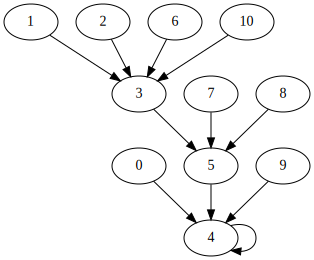
1.5.3 German
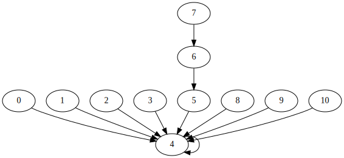
1.5.4 Danish
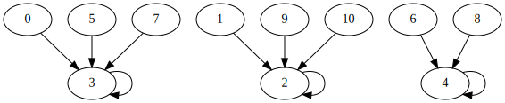
1.5.5 Dutch
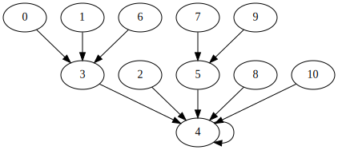
1.5.6 Norwegian
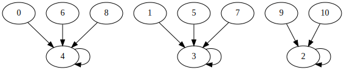
1.5.7 Swedish
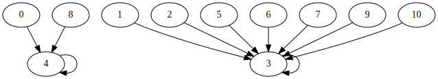
1.5.8 Spanish
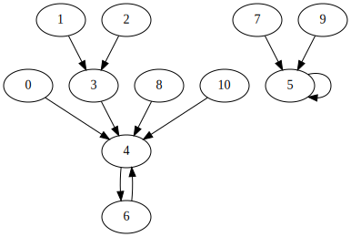
1.5.9 Catalan
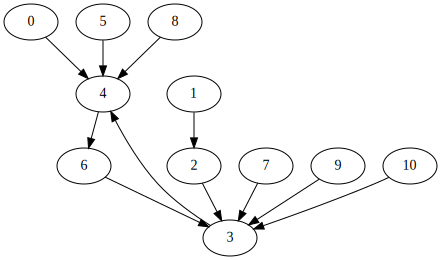
1.5.10 Portuguese
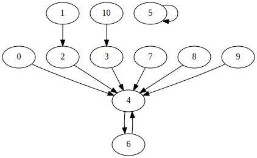
1.5.11 French
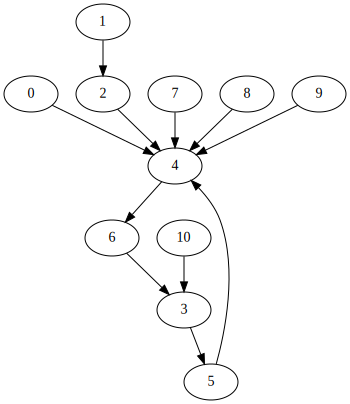
1.5.12 Italian
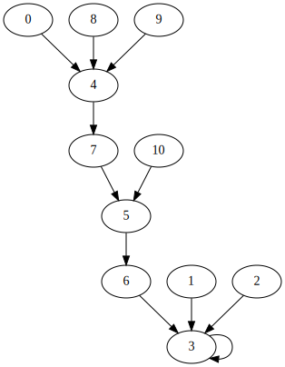
1.5.13 Finnish
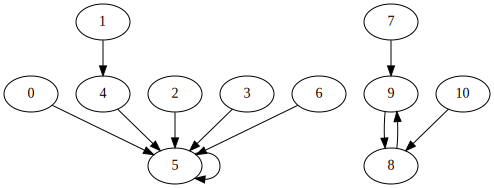
1.5.14 Esperanto
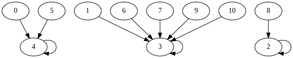
1.5.15 Japanese
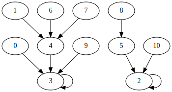
1.6 Finding Chains
The following SQLite query was used to find the minimum starting value for every path length in each of the tables. Nodes that are part of a loop have a path length of zero. Esperanto, Norwegian, and Swedish have the shortest, maximum path lengths at three connections each. Italian has the longest maximum path length with eight connections.
In the SQLite code, $lang is an Org Babel variable that is set before the code block is sent to SQLite. It is set to a column name, such as English_us. These fields contain the spelling lengths.
The nodes, iterations, and trans_closure common table expressions (CTEs) are queries copied from the Loops section. The non_loop_members CTE returns a table where the root number fields are removed.
The path_group CTE is similar to the itineraries CTE in my previous thread post. The strt field is used to group tree traversals starting from a node. It essentially proceeds like the trans_closure CTE, but the starting value is stored in strt, and the intermediate length value, numb, is also kept.
The smallest_path_lengths CTE takes path_group's output and groups path itineraries by their starting node, strt. It counts the number of entries (x) in each group, returning the path length, p_length, and starting value for each group. Numbers with equal path lengths (x) are grouped together, and the smallest starting value out of each group is taken.
The final query joins the path_group table with the smallest_path_lengths table to get the path members from path_group for paths starting with the strt values found by smallest_path_lengths. The node number and destination are formatted to make it easier to insert into Graphviz code.
This query required 30 seconds of running time on my computer. The majority of which was spent on the last two parts of the query.
| Query Part | Running Total Time | Time |
|---|---|---|
| nodes | 0.087 | 0.087 |
| trans_closure | 0.087 | 0. |
| non_loop_members | 0.087 | 0. |
| path_group | 1.055 | 0.968 |
| smallest_path_lengths | 12.253 | 11.198 |
| final query | 30.698 | 18.445 |
-- .timer ON WITH RECURSIVE nodes(numb, len) AS ( SELECT numb, $lang AS len FROM number_lengths WHERE numb <= (SELECT MAX($lang) FROM number_lengths) ), iterations(itter) AS ( SELECT(SELECT COUNT(*) FROM nodes) * (SELECT COUNT(*) FROM nodes) ), trans_closure(itter, numb, len) AS ( SELECT 0 AS itter, numb, len FROM nodes UNION ALL SELECT itter + 1, A.numb AS numb, B.len AS len FROM trans_closure AS A JOIN nodes AS B ON A.len = B.numb WHERE A.itter < (SELECT itter FROM iterations) ORDER BY 1 ASC ), -- remove root nodes non_loop_members(strt, numb, len) AS ( SELECT numb AS strt, numb, $lang FROM number_lengths WHERE numb NOT IN -- only get root nodes (SELECT numb FROM trans_closure WHERE numb = len) ), path_group(strt, numb, len) AS ( SELECT strt, numb, len FROM non_loop_members UNION ALL SELECT A.strt, A.len, B.len FROM path_group AS A JOIN non_loop_members AS B ON A.len = B.numb -- no loop count check is necessary because cyclic nodes were removed ), smallest_path_lengths(strt, p_length) AS ( SELECT strt, MIN(x) AS p_length FROM (SELECT strt, COUNT(*) AS x FROM path_group GROUP BY strt) GROUP BY x ) SELECT smallest_path_lengths.strt, p_length, CAST(numb AS text) || " -> " || CAST(len AS text) FROM smallest_path_lengths JOIN path_group ON path_group.strt = smallest_path_lengths.strt;
1.6.1 English
Results above 323 and 124 were based on my own estimates and comments posted on the YouTube video.
1.6.1.1 US/EUR English
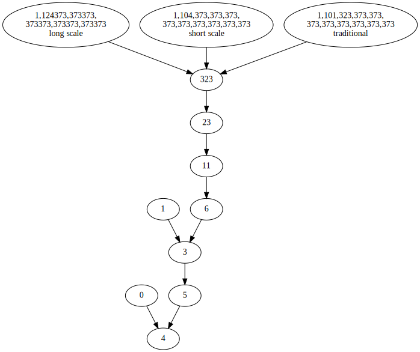
1.6.1.2 British English
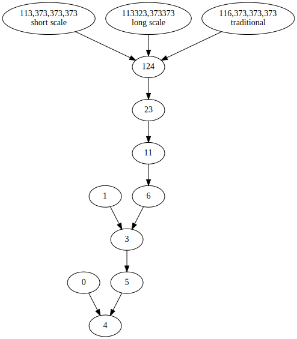
1.6.2 German
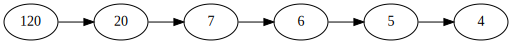
1.6.3 Danish
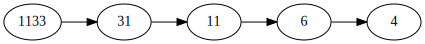
1.6.4 Dutch
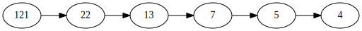
1.6.5 Norwegian
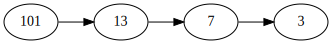
1.6.6 Swedish
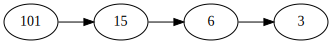
1.6.7 Spanish
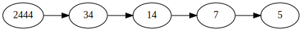
1.6.8 Catalan
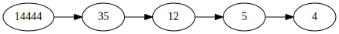
1.6.9 Portuguese
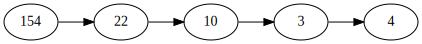
1.6.10 Swiss French
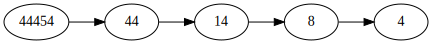
1.6.11 Standard French
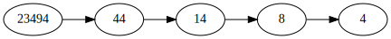
1.6.12 Italian
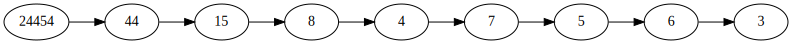
1.6.13 Finnish
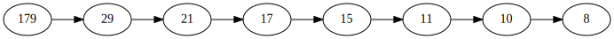
1.6.14 Esperanto
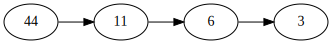
1.6.15 Japanese
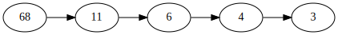